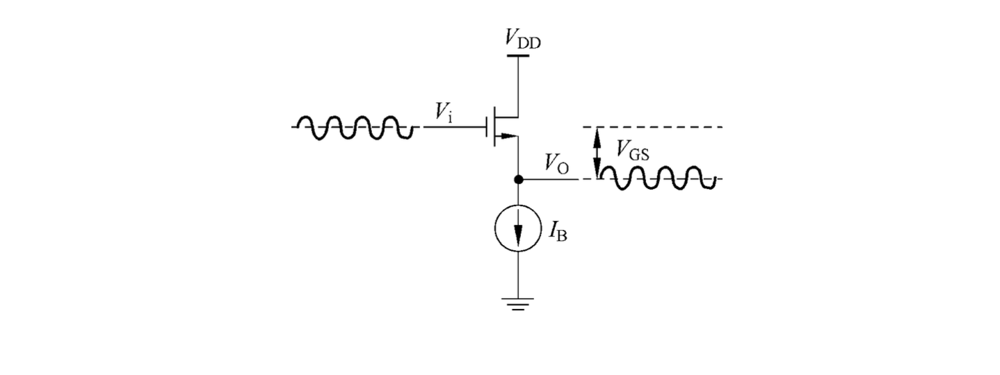

Advanced analog circuits
晶体管的长沟道模型
{kind=link}
- 栅极电压为零时，器件处于"关断"状态
- \(V_{GS}>0\)时，电子被拉到作为正极的栅极；\(V_{GS}>V_{t}\)时形成导电的反型层
- 此时若\(V_{DS}>0\),漏极与源极之间将有电流产生。
一阶电流-电压特性
{kind=link}
假定\(Q_n(x)=C_{ox}[V_{GS}-V(x)-V_t]\), \(I_D=Q_n\cdot v\cdot W\), \(v=\mu E\)。则
利用\(E=\mathrm dV/\mathrm dx\)，得到
{kind=link}
观察到\(V_{DS}>V_{GS}-V_t\)时图线异常下降，这是因为\(V_{GD}=V_{GS}-V_{DS}<V_t\)，时沟道夹断不能用这个模型。此时沟道电流与\(V_{DS}\)无关，称为饱和区。
{kind=link}
修正后的电流方程：
{kind=link}
电容模型
| 电容 | 截止区 | 线性区 | 饱和区 |
|---|---|---|---|
| \(C_{gs}\) | \(0\) | \(\dfrac{1}{2}WL C_{ox}\) | \(\dfrac{2}{3}WL C_{ox}\) |
| \(C_{gd}\) | \(0\) | \(\dfrac{1}{2}WL C_{ox}\) | \(0\) |
| \(C_{gb}\) | \(\left(\dfrac{1}{C_{cb}}+\dfrac{1}{C_{gc}}\right)^{-1}\) | \(0\) | \(0\) |
| \(C_{sb}\) | \(C_{jsb}\) | \(C_{jsb}+\frac{1}{2}C_{cb}\) | \(C_{jsb}+\frac{2}{3}C_{cb}\) |
| \(C_{db}\) | \(C_{jdb}\) | \(C_{jsb}+\frac{1}{2}C_{cb}\) | \(C_{jdb}\) |
线性区本征电容模型
{kind=link}
栅极和导电沟道以栅氧化层为中间介质构成平行板电容器。电容值为\(C_{gc}=C_{ox}\cdot W\cdot L\)、\(C_{gs}=C_{gd}=C_{gc}/2\)。势垒电容\(C_{cb}\) 增加了漏、源到衬底的电容，但通常可以忽略不计。
饱和区本征电容模型
\(V_{GD}\) 对沟道电荷的控制能力较弱，而 \(V_{GS}\) 对沟道电荷的控制能力较强。\(C_{gs}=2/3WLC_{ox}\)，\(C_{gd}\approx 0\)。
栅极看入是一接到衬底的电容，相当于栅氧电容和势垒电容的串联；如果栅极电压为负，耗尽区会缩小，栅极——衬底电容会增长。
非本征电容模型
{kind=link}
包括交叠电容（栅极到源极、栅极到漏极）和pn结电容（源极到衬底、漏极到衬底）。
交叠电容包括垂直方向的交叠电容\(C_{ox}L_{oI}W\)和侧壁交叠电容，后者在现代工艺中不可忽略，因为与其他特征尺寸相比，栅极厚度较大。可以使用简单的模型方程\(C_{oI}=W\cdot C_{oI}'\)，其中\(C_{oI}'\)是单位宽度的交叠电容。
衬底
{kind=link}
在 40nm CMOS（N 阱）工艺中,PMOS晶体管是五端器件（G、D、S、N阱、P衬底）。N 阱与衬底形成 PN 结，产生势垒电容 \(C_W\)。
- 当N阱=V_{DD}，衬底=GND时，\(C_W\)被短路，不影响性能
- 当N阱与源极连接，不会短路，产生\(0.05fF/\mu m^2\)的电容
衬底工艺
低成本（N阱）工艺中，只有 PMOS 具有独立的衬底连接，NMOS的P衬底是一大块。
{kind=link}
{kind=link}
N阱工艺下衬底的连接接方案：（注意NMOS的P衬底全都接地了）
{kind=link}
背栅效应
{kind=link}
随着\(V_{SB}\)增加，源极周围耗尽区也随之扩大；耗尽区中的负电荷增加会排斥电子阻止其聚集到沟道。因此需要更大的\(V_{GS}\)来对抗这种影响，相当于\(V_{t}\)增加了。
\(V_t\)的变化也会影响漏极电流\(I_D\),从而定义小信号下的背栅跨导
最终得到的小信号模型：（考虑了背栅效应和衬底电容）
{kind=link}
放大器的线性化分析
MOS的小信号模型
放大器的基本原理是利用压控压源（VCCS）将输入电压转化为电流，再用电阻将电流转化为输出电压。
CS组态的MOS可以作为VCCS：
{kind=link}
为此需要通过偏置把输入电压带入合适的工作区。我们定义静态工作点栅极过驱动电压\(V_{ov}=V_{I}-V_t\)（无输入信号时\(V_{ov}=V_{GS}-V_t\)）。
{kind=link}
假设\(\Delta V_i\ll V_{ov}\)，则
定义跨导
实际晶体管中，漏极电流与\(V_{DS}\)有弱相关性，进而
{kind=link}
因此从小新好看，有限的\(\dfrac{\mathrm dI_D}{\mathrm dV_{DS}}\)等效为与工作点有关的输出电导
{kind=link}
性能指标
{kind=link}
直流电压增益：\(A_{DC}=-g_mR\)，利用确定的\(A_{DC}\)和负载\(R\)求出需要的跨导\(g_m\)
带宽：\(f_{3\mathrm{dB}}=\dfrac{1}{2\pi R_i C_{gs}}\)，希望降低\(C_{gs}\)以提高带宽
功耗：\(P=V_{DD}I_D\)，希望降低\(I_D\)以降低功耗
因此从器件的角度，我们希望MOS提供\(g_m\)的情况下不产生很大的\(I_D\)和\(C_{gs}\)。因此可以定义“性能指标”
分别称为跨导效率和特征频率，它们都与过驱动电压\(V_{ov}\)有关。如果将其相乘，得到
{kind=link}
工艺演进的影响
得益于“摩尔定律”，特征尺寸以及最小沟道长度不断缩小。\(L_{min}\)大约每 5 年减少 2 倍。1970 年时 Lmin=10μm ，2020 年时 Lmin=10nm。可以通过不同的方式利用工艺微缩：
- 面向高速应用:构建更快的电路，利用更大的\(g_m/C_{gs}\),同时保持跨导效率\(g_m/I_D\)不变
- 面向低功耗应用:保持带宽\(g_m/C_{gs}\)不变，构建更高能效的电路(\(g_m/I_D\)更大)。
特征指标
{kind=link}
特征频率定义为共源电流增益为1的频率。忽略非本征电容得到
本征增益定义为输出电导为零时（\(R_L\to \infty\)）基本共源级可实现最大电压增益。
| 指标 | 定义 | 长沟道模型结果 |
|---|---|---|
| 跨导效率 | \(g_m / I_D\) | \(2 / V_{OV}\) |
| 特征角频率 | \(g_m / C_{gs}\) | \(\dfrac{3}{2}\dfrac{\mu V_{OV}}{L^2}\) |
| 本征增益 | \(g_m / g_{ds}\) | \(\approx \dfrac{2}{\lambda V_{OV}}\) |
晶体管的基本电路结构
晶体管有共源、共栅和共漏三种基本的连接模式。一个共源极就足以构建一个简单的放大器，栅极和共漏极可以作为有用的附加电路，用于构造“更好的”放大器。更复杂的模拟电路可以分解为上述三种基本连接方式的组合。
{kind=link}
共源极
{kind=link}
共源极具有很高的输入输出阻抗，是很好的VCCS。
共栅极
{kind=link}
定义\(C_s=C_{gs}+C_{sb}\)，\(g_m'=g_m+g_{mb}\)，忽略\(R_L\)得到
{kind=link}
共栅级是电流缓冲器，增益为1，带宽很高.
{kind=link}
求解输入阻抗：
得到
低频下
- 当\(R_L\ll r_o\)时，\(R_{in}\approx 1/g'_m\)，输入阻抗较低
- 当\(R_L\gg r_o\)时，\(R_{in}\approx R_L/g'_m\)，输入阻抗比未加入共栅级前降低本征增益倍
求解输出阻抗：
得到
输出阻抗比未加共栅级前的源阻抗\(R_S\)提升本征增益倍!
共栅极的电流增益在很宽的带宽内都接近1（大约到\(f_T\)），输入阻抗降低，输入阻抗升高可以作为电流缓冲器使用，可以利用这一点改进共源极VCCS。
共源共栅结构
{kind=link}
{kind=link}
性能
高频优势：
- 增益较小，削减密勒倍增效应；即使 \(R_L\) 较大，通常也会有一个负载电容提供低阻抗端接，帮助维持这一特性.
- 共源共栅结构削弱了高频下从 Vi 到 Vo 的直接正向耦合
高频缺点：共源共栅结构引入了\(f_T\)附近的极点，可能会影响相位裕度和稳定性:
另一个问题是输出摆幅问题，增加共栅极会降低输出信号摆幅。先进工艺下（\(V_DD<1\mathrm V\)）会造成严重问题，因为通常需要\(V_{DS}>150\mathrm{mV}\)，损失动态范围。
噪声
{kind=link}
通常认为共栅极不会产生额外噪声。但，其在高频的时候会产生额外噪声：高频时噪声电流A和B不能抵消。
共漏极
{kind=link}
电压传递函数和输入输出阻抗
{kind=link}
定义\(C_{Ltot}=C_L+C_{sb}\), \(R_{Ltot}=R_L\parallel \dfrac{1}{g_{mb}}\parallel r_o\), 则
低频增益
- PMOS，源极接衬底作为理想电流源: \(R_L\to\infty\), \(r_o\to\infty\), \(g_{mb}=0\)从而 \(a_{v0}=1\)
- NMOS做理想电流源：\(R_L\to\infty\), \(r_o\to\infty\), \(g_{mb}\neq 0\)从而 \(a_{v0}=\dfrac{g_m}{g_m+g_{mb}}\) (一般0.8左右)
- PMOS，源极与衬底相连作为负载电阻: \(R_L<\infty\), \(r_o\to\infty\), \(g_{mb}\neq 0\),此时\(a_{vo}=\dfrac{g_m}{g_m+\frac{1}{R_L}}\)
高频增益
其中
{kind=link}
输入阻抗
注意到
增益项 \(a_v(s)\)是实数，且在很宽的频率范围内都接近\(1\)，因此在一定频率范围内，可以忽略\(C_{gs}\)的影响。此时$Y_{in}=s(C_{gd}+C_{gb}),输入电容非常之小。
衬底与源连接的PMOS共漏极
{kind=link}
栅极与衬底间的电容与 \(C_gs\) 并联, \(g_{mb}\)不起作用，低频增益接近1。输入电容\(Y_{in}\approx sC_{gd}\)极小。
共漏极输入电容“自举”
{kind=link}
\(v_i\)经过两个共漏极到\(C_{gd}\)另一端
输出阻抗
理想电压源驱动：显然
其输出阻抗较低，在很宽的频率范围内都呈现出阻性。
有限输入源电阻：
{kind=link}
{kind=link}
当\(R_i>\frac{1}{g_m}\)，产生了电感效应！此时电路容易振荡。
{kind=link}
若不忽略\(C_i=C_{gd}+C_{gb}\),则
{kind=link}
应用
电平转换器：输出的静态工作点比输入低\(V_t+V_{ov}\)

{kind=link}
驱动器：隔离重负载\(R_{small}\)
{kind=link}
问题：
- NMOS，源极与衬底不相连，\(V_t\)随\(V_o\)变化
- \(R_L\)不大的时候，\(I_D\)和\(V_{ov}\)随\(V_o\)变化
- 输入和输出电压摆幅受限（\(V_{GS}\)分走大部分）
有源负载
{kind=link}
优势：
- 增益取决于同量纲物理量的比值，PVT稳定
- 一阶非线性抵消
劣势：摆幅降低
单管电路总结
| 组态 | 特性 | 用途 |
|---|---|---|
| 共源极 | 压控电流源；当输出为高阻时可形成较好的电压放大器 | 电压放大 |
| 共栅极 | 低输入阻抗，高输出阻抗 | 电流缓冲器 |
| 共栅极 | 可与共源级级联，提高整体本征电压增益 | 共源-共栅级（Cascode） |
| 共漏极 | 高输入阻抗，低输出阻抗 | 缓冲器（源极跟随器） |
| 共漏极 | 适合进行直流工作点的搬移 | 电平移动 |
| 共漏极 | 当摆幅与非线性要求不高时可作电压驱动器 | 电压驱动 |
| ### 电流镜 |
{kind=link}
目标：
- 精确的景象比\(I_{Tail}/I_Ref}\)
- 大的\(R_{Tail}\),用来获得好CMRR
- 小的\(V_{min}\),最大化共模输入范围
基本电流镜
{kind=link}
一般来说始终令\(L_1=L_2\),并将\(W_1/W_2\)或者\(W_2/W_1\)设置为整数（从而并联使用单元器件）。
从而两种选择：
- 用大输出电阻\(r_o\)的器件（加大\(L\)）
- 令\(V_1\)尽量接近\(V_2\).
共源共栅电流镜
{kind=link}
共源共栅结构有助于得到更高的输出电阻，可用于提高差分对的CMRR
即使电流镜输出端的电阻很高，仍然希望\(V_1=V_2\),这样尽量减少\(I_2/I_1\)的系统误差
方案1 ref上也叠一个共栅管，坏处是\(V_{OUTmin}\)将会很高
{kind=link}
方案2 用电压源提供共源共栅管的栅极电位，让\(V_{outmin}=2V_{ov}\)(最小值）：（因为只需要\(V_{DS}>V_{ov}\)就可以，不需要大于\(V_{GS}\))
{kind=link}
此时需要偏置电压\(V_B=V_t+2V_{ov}\)。